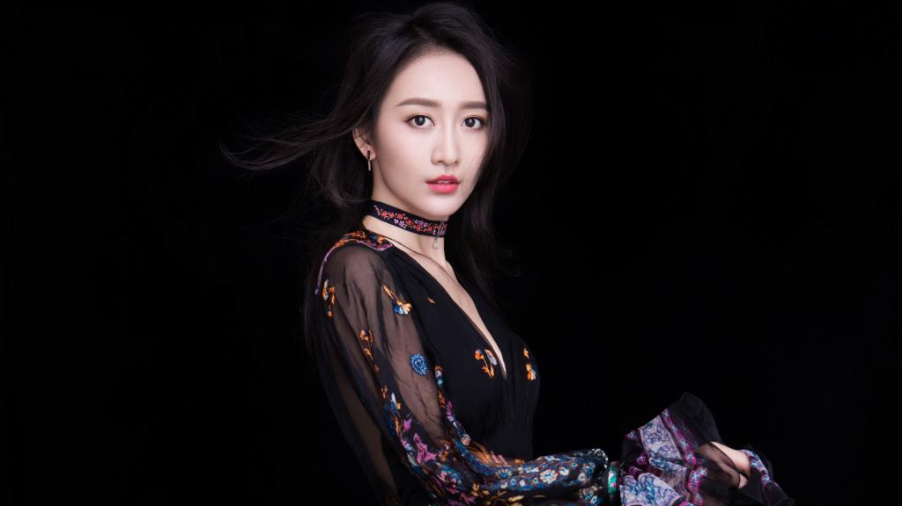

王鸥
王鸥（1982年10月28日－），广西南宁人，中国大陆影视演员、模特、歌手，有过舞蹈演员、电视台特邀主持人等经历。
重要事件
- 2003年，获得第四届CCTV模特电视大赛全国总决赛最上镜奖 。
- 2005年，出演个人首部影视剧《心戒》。
-
2009年，在系列电影《镖行天下前传》中饰演女一号谷平安而被观众所熟知 。
-
2016年1月1日，凭借古装剧《琅琊榜》获得安徽卫视国剧盛典最受欢迎女配角提名。5月21日，凭借谍战剧《伪装者》获得第19届华鼎奖中国百强电视剧最佳女配角。6月，主演了都市生活剧《周末父母》。
-
2017年，主演古装权谋剧《天盛长歌》。 2018年，主演古装玄幻剧《莽荒纪》。
-
2019年以《推手》、《芝麻胡同》、《九州缥缈录》、《惊蛰》、《精英律师》与大家见面，更凭借《芝麻胡同》获得第26届华鼎奖中国百强电视剧最佳女演员。
- 2020年担任《猎狐》女主角。
成就和荣誉称号
- 2001年,南宁女性形象魅力大赛冠军
- 2001年,新丝路中国模特大赛广西分赛区十佳、最具明星气质奖
- 2002年,中越友谊小姐大赛冠军
-
2003年,第四届CCTV模特电视大赛南宁分赛区冠军、最佳气质奖、最受媒体欢迎奖、十佳
- 2003年, 第四届CCTV模特电视大赛全国总决赛最上镜奖、前五名
-
2016年,第19届华鼎奖中国百强电视剧满意度调查发布盛典－中国百强电视剧最佳女配角《伪装者》
-
2019年,第26届华鼎奖中国百强电视剧满意度调查发布盛典－中国近现代题材电视剧最佳女演员《芝麻胡同》
- 2020年,2019年国剧盛典－年度演技突破女演员《谍战深海之惊蛰》
主要作品
| 年份 | 电影名 | 角色名 |
|---|
| 2006年 |
女神捕之杀手无名 |
六夫人 |
| 2009年 |
凤舞天下 |
楚国公主云珠 |
| 2010年 |
镖行天下前传 |
谷平安 |
| 2012年 |
神探亨特张 |
客串 |
| 2016年 |
发条城市 |
骄阳 |
| 待上映 |
温柔的子弹 |
金梅 |
生活照

生平
广东电视台体育频道《武林探秘》（特邀主持人）
广西电视台生活频道《时尚之旅》（特邀主持人）